01 / HAKOBUNE
雲海に浮かぶ箱舟
風景を映し、光を抱く。
内と外のあいだを、暮らす。
ARCHITECTURE FOR ASSET VALUE.
資産の可能性を、
建築でひらく。
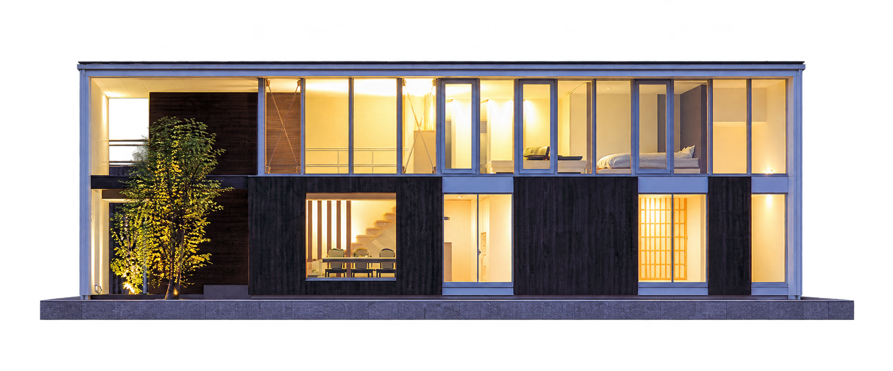
改修の余地、空間の使い方、風景との関係。
写真と3Dを行き来しながら、
資産の次の姿を描いていく。
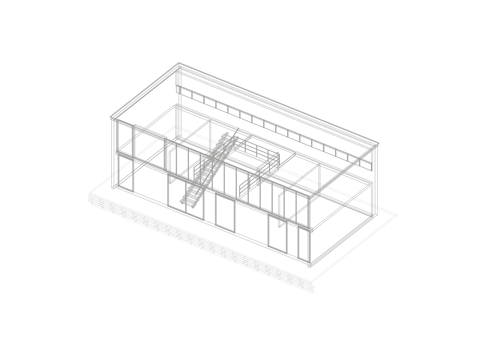
HAKOBUNE雲海に浮かぶ箱舟 / 写真をもとにした空間スタディ
どう持つか。どう使うか。
その選択から、設計をはじめる。
保有する住宅や建物の改修・リノベーション。いまある構造や場所の魅力を読み解き、用途と空間の質を見直すことで、新たな選ばれる理由をつくります。
保有建物の可能性を相談する ↗自分のために過ごす、もうひとつの場所。土地や風景に向き合い、長く愛着を持てる別荘・第二の住処を、新築や既存建物の再生から考えます。
第二の住処を相談する ↗自分で楽しむことと、人を迎えること。貸別荘や宿泊用途など、資産運用・資産形成の視点も含めて建物の活用を考え、滞在体験に魅力を生む設計を提案します。
滞在用途への活用を相談する ↗風景を映し、光を抱く。
内と外のあいだを、暮らす。
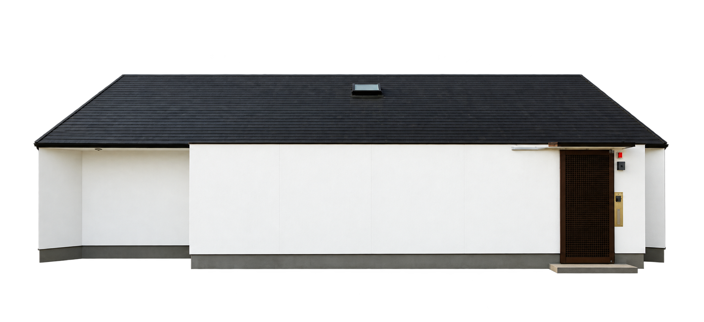
ひとつの屋根の下に、
それぞれの穏やかな時間。
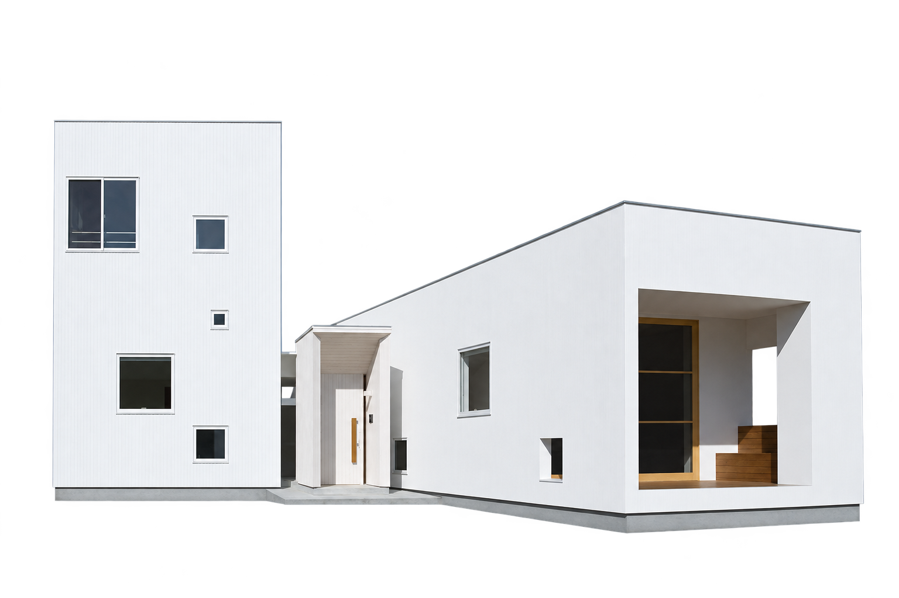
縦へ、横へ。
余白から生まれる、新しい眺め。
一棟ごとの、確かな個性。
これまでの建築が、
次の可能性を支えている。
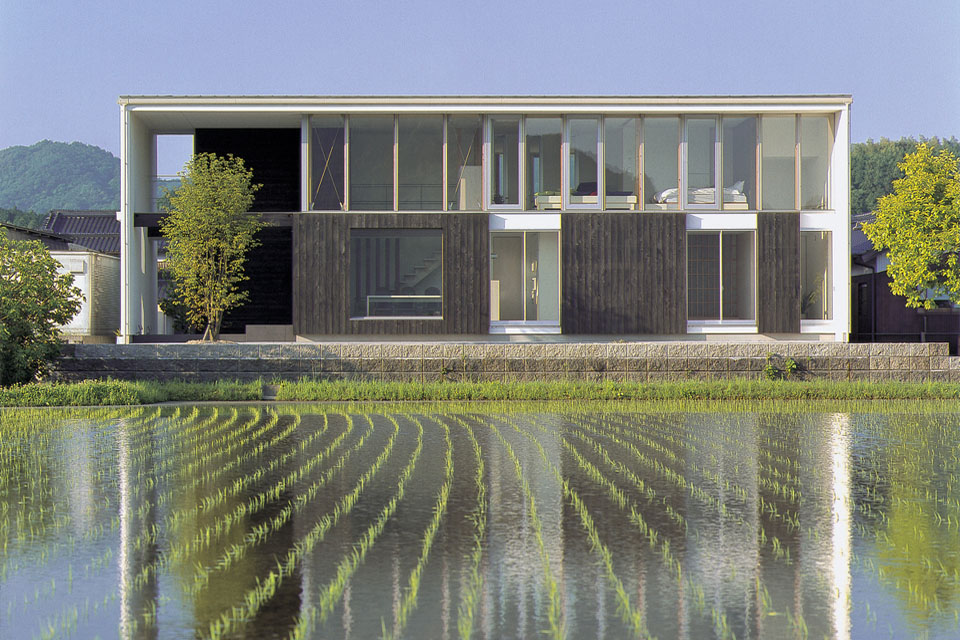
013D STUDY雲海に浮かぶ箱舟↗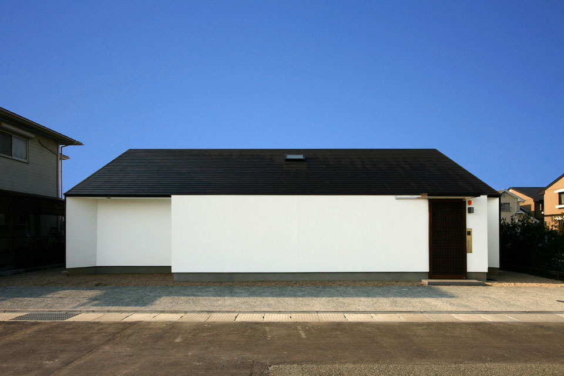
023D / 準備中大きな屋根の家↗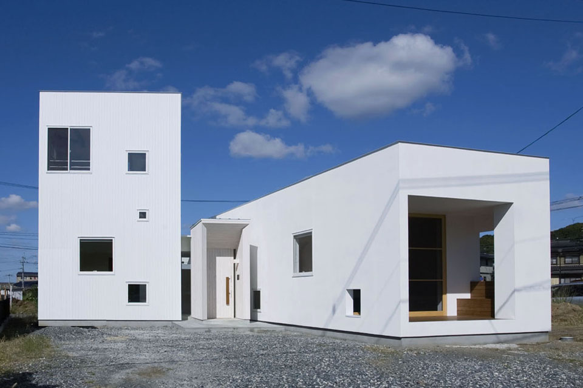
033D / 準備中Vertical / Horizon↗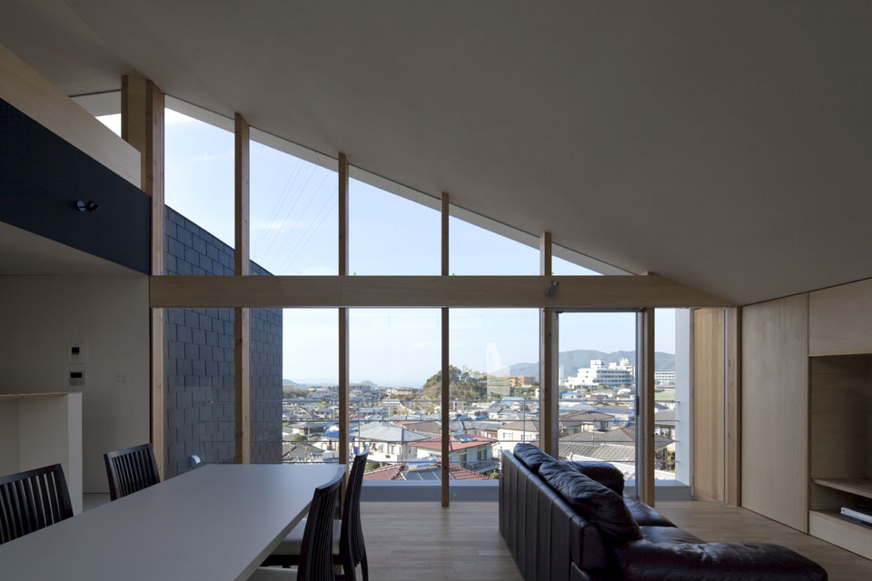
043D / 準備中Gazebo House↗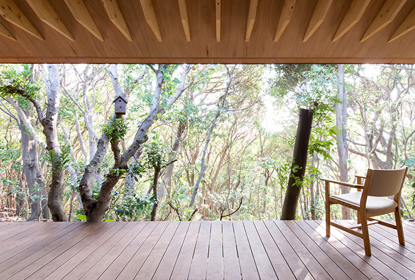
053D / 準備中オーベルジュあかだま↗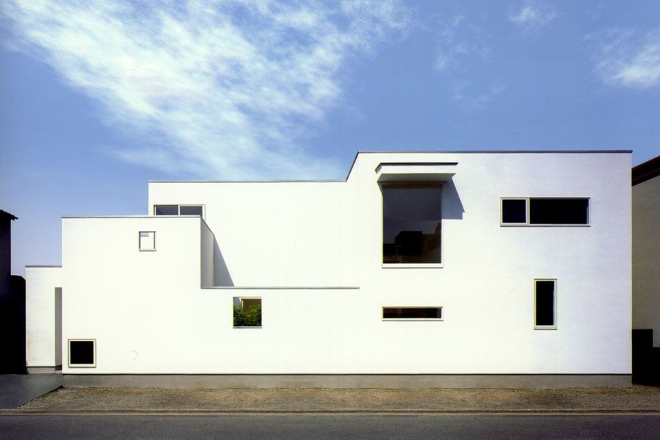
063D / 準備中maimai house↗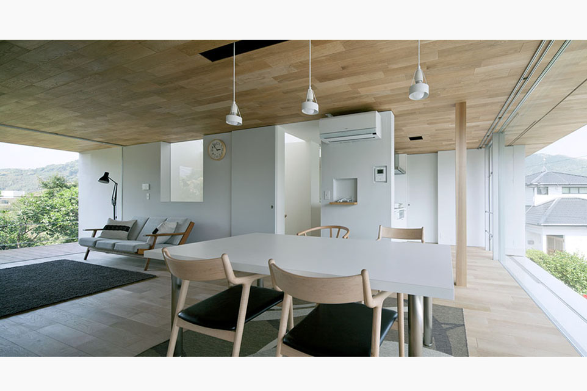
073D / 準備中（仮称）長崎のO邸↗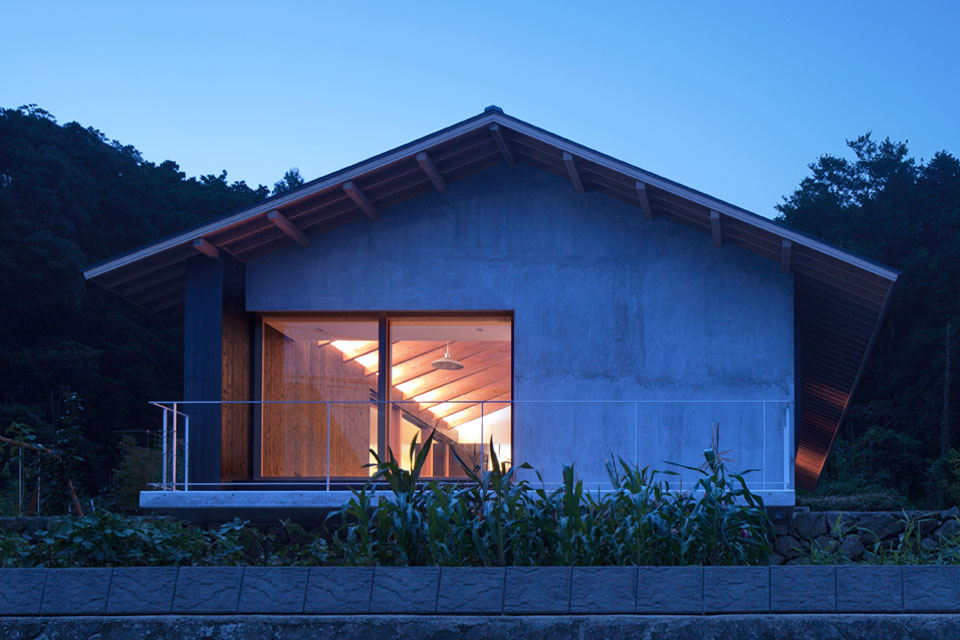
083D / 準備中千々石の家↗公式サイトの作品を順次収録。写真・3Dは段階的に追加します。
公式作品一覧 ↗日本建築学会 建築九州賞
住宅部門 作品賞
新建築 住宅特集 2013年6月号 / OLU House
住まいの設計 創刊50周年記念号 / Gazebo House
REAL KITCHEN & INTERIOR SEASON 3 / G-house
VALUE YOU CAN FEEL.
所有する価値に、
過ごす歓びを。
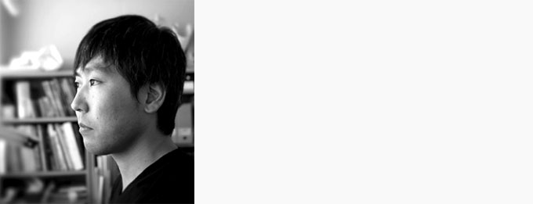
井上 聡建築家 / 写真家 / デザインディレクター
福岡を拠点に、建築・写真・デザインの分野で活動。
2004年、イノウエサトル建築計画事務所を設立。
保有建物の再生、別荘、滞在施設への活用。
「この資産を、どう生かすか」から、
一緒に考えてみませんか。